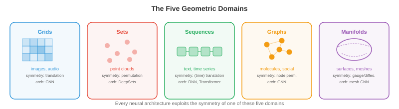
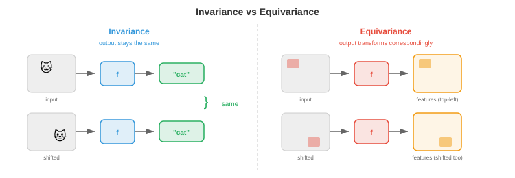
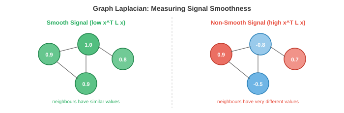
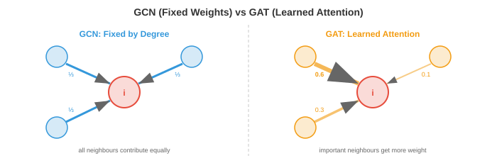

Sheet 11 ended with a promise. Its §19 showed you that a swarm reaching consensus is a free–free structure settling into its rigid-body mode — that \(L\mathbf{1}=\mathbf{0}\) is the statement “translate the whole thing and nothing strains”, that node degree behaves like mass, and that the Fiedler value λ2 sets the convergence rate for the same reason the first elastic mode is the second eigenvalue. That was the setup. This is the payoff.
The claim this sheet rests on is stronger than an analogy and it is worth stating flatly
before anything else: for a network in which each node carries one scalar degree of
freedom, the graph Laplacian \(L = D - A\) is not similar to, not analogous to, not
structurally like the global stiffness matrix. It is the matrix you get by running
the direct stiffness method with element matrix
\(\begin{bmatrix}1&-1\\-1&1\end{bmatrix}\) on every edge. Same entries, same
assembly, same null space. Checked to zero error in
verify_claims.py under [Ch12 s07].
That identity is load-bearing, so almost everything in this field turns out to be something you have already computed. Spectral graph theory is modal analysis. The normalisation in the GCN formula is mass-normalisation. Graph coarsening is Guyan reduction. Over-smoothing is a structure relaxing to its rigid-body mode, at a rate you can read off the second eigenvalue. And message passing is an iterative solver — specifically, and for a reason worth the whole of §11, it is Jacobi rather than Gauss–Seidel.
Because the bridge is so strong, this sheet inherits Sheet 11’s hazard in a sharper form: the few things that do not transfer are easy to walk straight past. There are four, and they are flagged in amber throughout. The most important is §17, where attention arrives and the stiffness matrix stops being symmetric — at which point strain energy, real mode shapes and every variational argument in this sheet evaporate at once.
This chapter’s source files contain more checkable errors than any so far. Each is corrected in place, with the computation, rather than written around:
- File 03’s worked example of sum-versus-mean aggregation is exactly backwards, in the prose and again in its own runnable code (§15).
- File 03 says over-smoothing drives every node to “the same value”. It drives them to a multiple of \(\sqrt{1+d_i}\) (§13).
- File 05 says an invariant architecture “cannot produce vector outputs without breaking symmetry”. Differentiating an invariant energy gives provably equivariant forces (§22).
- File 02 says \(A^k_{ij}\) counts paths of length \(k\). It counts walks (§04).
- File 03 calls \(\hat{A}H\) a “weighted average” of the neighbours. Its rows do not sum to one (§12).
Sheet 11 was the first whose verdict column mostly read identical. This one goes further: several rows below are not correspondences at all but the same matrix, and the ones marked identity have been checked numerically to machine precision. Read the amber rows twice. In a sheet this friendly, they are the whole risk.
| What you already know | What this chapter calls it | Verdict |
|---|---|---|
| Direct stiffness assembly of a 1-DOF spring network | The graph Laplacian \(L=D-A\) | Identity. Same matrix, zero error. See §05. |
| Strain energy \(U=\tfrac12\mathbf{x}^{T}K\mathbf{x}\) | “Signal smoothness” \(\mathbf{x}^{T}L\mathbf{x}\) | Identity, up to the factor 2. A smooth signal is a low-energy one. See §06. |
| Rigid-body mode of a free–free structure | The constant eigenvector, \(L\mathbf{1}=\mathbf{0}\) | Identity. Already shown in Sheet 11 §19. See §08. |
| Mode shapes of a free–free bar in axial vibration | Laplacian eigenvectors of a path graph | Identity. They are \(\cos(\pi k(j+\tfrac12)/n)\) in both fields. See §08. |
| Nodal-diameter modes of a bladed disc; the DFT | The “graph Fourier transform” on a ring | Identity. Not analogous to the DFT — the same matrix. See §09. |
| Mass-normalised stiffness \(M^{-1/2}KM^{-1/2}\) | Normalised Laplacian \(D^{-1/2}LD^{-1/2}\) | Identity, and lumped mass really is proportional to degree. See §10. |
| Jacobi iteration (simultaneous displacements) | One round of message passing | Identity — and permutation symmetry forbids Gauss–Seidel. See §11. |
| Degree of static indeterminacy; redundant members | Cyclomatic number \(m-n+c\) | Identity. A tree is statically determinate. See §07. |
| Galerkin coarse grid \(K_c=R^{T}KR\); Guyan reduction | DiffPool’s \(A'=S^{T}AS\) | Identity, including the rule about reproducing rigid-body modes. See §19. |
| Material frame indifference (objectivity) | SE(3)-equivariance | The same requirement, word for word. See §02. |
| Isotropic constitutive law written in \(I_1,I_2,I_3\) | An “invariant architecture” using only distances and angles | The same theorem. See §20. |
| \(\nabla\mathbf{v}=\) dilatation + vorticity + deviatoric rate | Irreps \(\ell=0\oplus\ell=1\oplus\ell=2\), i.e. \(9=1+3+5\) | Identity. Mohr’s factor of 2 is the \(\ell=2\) label. See §21. |
| Heat conduction; a structure relaxing to rigid-body motion | Over-smoothing | The same equation, but it lands on \(\sqrt{1+d_i}\), not a constant. See §13. |
| Critical time step in explicit dynamics | The self-loop \(\tilde{A}=A+I\) | The same fix, and the source gives the wrong reason for it. See §14. |
| Summing forces at a joint — never averaging them | Sum versus mean aggregation (GIN) | The same distinction, though the source’s example inverts it. See §15. |
| Finite differences on a structured grid | A CNN | The same special case, for the same reason: one stencil everywhere. See §03. |
| Modal testing to identify a structure | Spectral encodings; the Weisfeiler–Lehman test | Transfers, including the failure. Cospectral structures exist. See §16. |
| Maxwell–Betti reciprocity forcing \(K=K^{T}\) | Graph attention (GAT) | The bridge ends here. \(\alpha_{ij}\neq\alpha_{ji}\): no energy, no real modes. See §17. |
| A 2-D truss with direction cosines | The graph Laplacian | Not the same object. One DOF per node is the whole condition. See §05. |
| Any structural intuition about depth helping | Deep GNNs | Inverted. More layers destroy information rather than build it. See §13. |
Sixteen of the twenty rows say identity or the same. Do not re-learn those — learn the new name and move on. Spend the time you save on the four amber rows, and in particular on §17. Everything in §§05–16 depends on the aggregation operator being symmetric, and §17 is where it stops being symmetric. A reader who takes the stiffness picture into the attention sections will reach confident and wrong conclusions.
The framing idea of this chapter is called geometric deep learning, and its claim is that the zoo of neural network architectures — convolutional, recurrent, attention-based, graph-based — are all the same construction applied to data with different symmetries. You have met this argument before, in a different accent. It is the argument for cyclic symmetry analysis.
When you model a bladed disc, a flanged pressure vessel or a planetary carrier, you do not mesh the whole thing. You mesh one sector and apply cyclic symmetry boundary conditions, and you recover every mode of the full structure from that one sector. The saving is a factor of \(n\), and the justification is that the structure is invariant under rotation by \(2\pi/n\) — the cyclic group \(C_n\). You exploited a symmetry to shrink the model, and you did not lose a single mode by doing it.
That is the entire content of the geometric deep learning argument, transposed. A network that already knows the symmetry of its data does not have to learn it from examples, so it needs fewer parameters and less data for the same accuracy. The source puts it as “the symmetry constraint reduces the hypothesis space”; you would put it as “I only meshed one sector”. Same economy, same reason.
A set of transformations closed under composition, associative, containing a do-nothing element, with every element invertible. The rotations of your bladed disc form one. So do the permutations of \(n\) labelled nodes (\(S_n\)), the rotations of 3-D space (\(SO(3)\)), and rigid-body motions (\(SE(3)\)). Nothing in the definition is new to you — a screw displacement composed with another screw displacement is a screw displacement, and that sentence is closure.

Cyclic symmetry buys you an \(n\)-fold reduction in model size at zero cost in accuracy, provided the structure really has that symmetry. Mistune one blade and the assumption collapses: the real mode shapes localise onto a few blades, and the one-sector model cannot represent them at all. The machine learning version is exactly as brittle. Build translation equivariance into a network and you save enormously on parameters — unless absolute position actually matters, in which case you have hard-coded a falsehood. Mistuning is the honest mental model for every architectural symmetry assumption in this chapter.
Two words carry the whole chapter, and you already obey both under different names.
A function is invariant under a group if transforming the input leaves the output alone: \(f(\rho(g,x)) = f(x)\). A function is equivariant if transforming the input transforms the output correspondingly: \(f(\rho_{\text{in}}(g,x)) = \rho_{\text{out}}(g, f(x))\). Energy is invariant under rotation. Force is equivariant: rotate the body and the force vector rotates with it.
That sentence is the definition of material frame indifference — objectivity — and it is a hard requirement on every constitutive model you have ever used. A stress–strain law that gave different answers when you rotated your coordinate axes would be rejected on sight, not because it fits data badly but because it is not a physical law. Rotate the specimen and the stress tensor must rotate as \(\boldsymbol\sigma \mapsto R\boldsymbol\sigma R^{T}\); nothing else is admissible.

So when file 05 insists that a molecular network must be SE(3)-equivariant or its force predictions are “physically wrong”, it is making the objectivity argument, and making it correctly. The novelty is not the principle. The novelty is that a neural network is a constitutive model you did not write down, so the objectivity has to be built into its architecture rather than checked on its algebra.
There is one structural rule worth carrying forward, and it has a mechanical reading too. Intermediate layers should be equivariant, the final output invariant. In your terms: carry the tensors through the analysis in whatever frame you like, keeping them transforming properly at every step, and only at the end contract down to the scalar you actually report — a von Mises stress, a factor of safety, a total energy. Losing the frame information too early is the mistake in both fields.
Objectivity in mechanics is a theorem about the universe: no experiment can detect the observer’s orientation, so the constraint costs nothing. Invariance in a learned model is a claim about the task, and it can be false. A cat detector should be translation-invariant; a pipe-stress classifier should absolutely not be gravity-direction-invariant, because which way is down changes the answer. Building in a symmetry the task does not have is not a free regulariser — it is an unfalsifiable bias, and the network cannot tell you it is wrong. Ask what the symmetry group of the problem is before borrowing the symmetry group of the space.
File 01 lists five domains — grids, sets, sequences, graphs, manifolds — and claims a unification: a CNN is a GNN on a grid graph, a transformer is a GNN on a fully connected graph, DeepSets is a GNN with no edges. That is correct, and there is a sharper way to say it that costs a mechanical engineer no effort at all.
A CNN is to a GNN what a finite-difference stencil on a structured grid is to finite element assembly on an unstructured mesh.
Follow the reasoning and you will find it is the same reasoning, not a resemblance. On a structured grid every interior node has an identical neighbourhood — north, south, east, west — so you can write one stencil, hard-code it, and sweep it across the domain. That is exactly what weight sharing in a convolution is: one small array of coefficients, applied at every position. The coefficients are learned rather than derived from a Taylor expansion, but the object is the same object.
On an unstructured mesh the neighbourhoods differ from node to node. One vertex has five elements round it, the next has seven. You cannot write a single stencil, so you do something more general: define the rule per element, apply it to every element whatever its neighbours, and accumulate the results at the shared nodes. That is the direct stiffness method, and it is also message passing. Both handle irregularity the same way — by making the local rule independent of how many neighbours there are and summing whatever arrives.
The taxonomy in Fig. 12.1 then reads as something you already have opinions about. Structured grid, unstructured mesh, surface mesh: hexahedral sweeps, tetrahedral fills, shell elements on a mid-surface. The “manifold” row — where the operators have to be intrinsic to the surface rather than to the space it sits in — is the row that says a shell element’s formulation must be written in surface coordinates, not global ones.
You already know why you tolerate unstructured meshing despite structured grids being faster, better conditioned and easier to reason about: real geometry will not submit to a structured grid. Fillets, bosses, non-manifold junctions. The machine learning argument for GNNs is identical — a molecule, a road network and a citation graph have no grid to be laid on — and so are the costs. Irregular data structures, indirect indexing, poor memory locality, and the loss of every convenience that regularity bought you. §23 mentions scalability; this is why it is hard.
A graph \(G=(V,E)\) is a set of nodes and a set of edges. You have typed one out by hand: the element connectivity table in any FE input deck is an edge list, and the node coordinate table is the node feature matrix \(X\). This is not a way of thinking about a mesh — it is what a mesh file literally contains.
The adjacency matrix \(A\) is the \(n\times n\) matrix with \(A_{ij}=1\) when nodes \(i\) and \(j\) share an edge and \(0\) otherwise. For an undirected graph it is symmetric, which will matter a great deal from §05 onwards. The degree \(d_i=\sum_j A_{ij}\) is the number of members meeting at a joint, and the degree matrix \(D\) puts those on a diagonal.

A correction: powers of \(A\) count walks, not paths
File 02 states that “\(A^k_{ij}\) counts length-\(k\) paths”. It does not. It counts walks, and the difference is not pedantry — a path visits no vertex twice, a walk may revisit freely. The triangle in Fig. 12.3 settles it in one line:
\(A^2_{00}=2\). There are no paths of length two from node 0 back to node 0 — a path cannot repeat node 0. There are two walks: out to 1 and back, out to 2 and back. The diagonal of \(A^2\) is always the degree sequence for exactly this reason, which is the giveaway. Counting genuine paths is a much harder problem — it is \(\#P\)-hard in general — and no matrix power does it.
This matters downstream because §12 will show that a degree-\(K\) polynomial in \(L\)
reaches exactly \(K\) hops. That statement is about walks. If you believed the source and
read it as paths, the reasoning about receptive fields would come out subtly wrong in
any graph containing a cycle, which is to say in every interesting graph.
Checked under [Ch12 s06].
Weighted graph: springs of different stiffness, or pipes of different conductance. Bipartite: a two-sided incidence structure, like members versus joints. Complete graph \(K_n\): everything connected to everything, which is what a transformer operates on and what a fully-populated matrix looks like. Connected components: separate sub-assemblies with no load path between them. Diameter: the longest shortest path, a rough proxy for how many relaxation sweeps information needs to cross the structure. All of it is free.
Here is the matrix the source calls “perhaps the most important matrix in graph theory”:
Degrees on the diagonal, \(-1\) wherever there is an edge. Now here is the direct stiffness method, which you have run by hand. Take a network of axial springs. Give each node one scalar degree of freedom \(x_i\). A spring of stiffness \(k\) between nodes \(i\) and \(j\) has element stiffness matrix
because the force on \(i\) is \(k(x_i-x_j)\) and the force on \(j\) is \(k(x_j-x_i)\). Assemble: scatter each element matrix into the global positions of its two nodes and add. Every node picks up \(+k\) on its diagonal once per attached spring — so the diagonal becomes the degree — and every edge deposits \(-k\) in the two off-diagonal slots. The result is \(D-A\).
It is worth being blunt about how literal this is. It is not that the two matrices have
the same structure, or the same eigenvalue behaviour, or a useful correspondence. Running
the assembly loop and running np.diag(A.sum(1)) - A produce the same array,
with maximum absolute difference exactly \(0\). With unit springs you get \(L\); with
stiffness \(k_{ij}\) on each member you get the weighted Laplacian of the weighted graph.
Both checked under [Ch12 s07].
Every property the source lists for \(L\) is a property of \(K\) you already knew. Symmetric, because Maxwell–Betti reciprocity says so. Positive semi-definite, because strain energy cannot be negative. Smallest eigenvalue zero with eigenvector \(\mathbf{1}\), because the structure is free–free and translating everything by the same amount strains nothing. The number of zero eigenvalues equals the number of connected components, because each unattached sub-assembly floats independently. You do not need to memorise any of that list. You need to notice it is your list.
A free–free spring network, six nodes, one scalar DOF each, seven members, all one connected piece. How many zero eigenvalues does its \(6\times6\) stiffness matrix have?
(zero eigenvalues)
m − n + c
The identity requires one scalar degree of freedom per node. That covers a shear
building, a thermal resistance network, a resistor network, a pipe network in linearised
flow — anywhere the state at a node is a single number and the flow along a member
is proportional to the difference. It does not cover a real 2-D truss. Give a node
\(x\) and \(y\) and the element matrix becomes
\(\frac{k}{L}\begin{bmatrix}c^2&cs\\cs&s^2\end{bmatrix}\)-blocked with direction
cosines \(c,s\), the global matrix is \(2n\times2n\) rather than \(n\times n\), and it
has three rigid-body modes in the plane rather than one. Checked under
[Ch12 s20]: a 3-node planar truss gives a \(6\times6\) matrix of rank 3.
Geometry has entered, and geometry is exactly what a graph does not have. Every
“identity” row in §00 is scoped by this condition.
The source gives the Laplacian quadratic form and calls it a measure of smoothness:
Put a \(\tfrac12\) in front and read it again. With unit springs, \(\tfrac12 k\,\delta^2\) per member summed over members is the strain energy of the network. So
which is the same identity \(U=\tfrac12\mathbf{x}^{T}K\mathbf{x}\) you have written a
hundred times, now with \(K\) spelled \(L\). Verified for unit and weighted springs under
[Ch12 s08].
This converts the chapter’s central vague word into something precise. “Smooth” signals on a graph are low-energy configurations of the spring network. A signal that takes similar values on connected nodes barely stretches any member, so it stores little energy. A signal that flips sign across every edge stretches everything, and sits high in the energy landscape.
Every later use of the word inherits this reading. Spectral clustering looks for the lowest-energy non-trivial configuration. A low-pass graph filter suppresses the high-energy modes. Over-smoothing (§13) is the network sliding downhill to the zero-energy state. Semi-supervised learning on graphs — label a few nodes, infer the rest — minimises \(\mathbf{x}^{T}L\mathbf{x}\) subject to the known labels, which is the same variational problem as finding the equilibrium shape of a spring network with some nodes pinned. Minimum potential energy, subject to boundary conditions. You have solved that problem by hand.

A six-node ring carries the signal \(+1,-1,+1,-1,+1,-1\). You now add one brace across the ring, joining two nodes that currently hold opposite values. What happens to \(\mathbf{x}^{T}L\mathbf{x}\)?
member
xᵀLx / xᵀx
File 02 notes in passing that a graph with no cycles is a tree, and that a tree on \(n\) nodes has exactly \(n-1\) edges. It presents this as bookkeeping. It is not bookkeeping — it is a statement about static determinacy, and the correspondence is exact.
Count the independent cycles in a graph. The number is the cyclomatic number \(m - n + c\), for \(m\) edges, \(n\) nodes and \(c\) connected components. Separately, take the same network as a 1-DOF spring structure and ask the question a structures course asks: how many independent sets of member forces satisfy equilibrium at every joint with no external load applied? That count is the degree of static indeterminacy — the number of redundant members, the number of extra equations you need compatibility for.
They are the same number. Both equal \(m - \operatorname{rank}(B)\) where \(B\) is the
incidence matrix, and \(\operatorname{rank}(B) = n - c\) always. Checked for a tree, a
single cycle, \(K_4\) and a disconnected pair under [Ch12 s09]:
| Network | n | m | Components c | Cycles m−n+c | Self-equilibrated force sets |
|---|---|---|---|---|---|
| Path (a tree) | 5 | 4 | 1 | 0 | 0 |
| Path closed into a ring | 5 | 5 | 1 | 1 | 1 |
| \(K_4\), complete on 4 nodes | 4 | 6 | 1 | 3 | 3 |
| Two disjoint triangles | 6 | 6 | 2 | 2 | 2 |
So “a tree is the simplest connected graph” is the sentence “a tree is statically determinate”. Every edge beyond \(n-1\) is one redundant member, and a self-equilibrated force set circulating round a cycle is exactly the lack-of-fit stress you get from a member machined slightly too long — a force state with no external load to explain it.
There is a machine learning consequence. Unroll message passing round a node for \(k\) rounds and you get a computation tree. On an actual tree, no information reaches a node twice by two different routes — the count is exact. On a graph with cycles, messages echo back to their source, the same evidence is counted more than once, and after a few rounds a node is largely listening to itself. That is double-counting on a redundant load path, and it is one honest mechanism behind the depth limit in §13. The cyclomatic number measures how much of it there is.
Once \(L\) is a stiffness matrix, its eigenvectors are mode shapes and its eigenvalues are squared natural frequencies — with unit masses, \(L\boldsymbol\phi = \omega^2\boldsymbol\phi\). The source calls this “spectral graph theory” and presents it as new machinery. It is modal analysis.
Take the simplest case and it becomes an identity you can write down. A path graph on \(n\) nodes is a chain: \(1-2-3-\cdots-n\). As a structure it is a free–free bar discretised into \(n\) lumped nodes with springs between them — or a shear building with \(n\) floors, whose stiffness matrix is the tridiagonal \([-k,\,2k,\,-k]\) you have written out for a three-storey frame. Its Laplacian eigenvalues are
and its eigenvectors are
which are exactly the axial mode shapes of a free–free bar: a half-cosine, a full
cosine, and so on, with the half-index shift that comes from the nodes sitting at cell
centres. Checked at \(n=6\) and \(n=12\), eigenvalues to \(1.3\times10^{-15}\) and
eigenvectors to \(2.6\times10^{-15}\), under [Ch12 s10].
So the objects the chapter builds its spectral theory on are objects you have plotted. \(\phi_0\) is flat — the rigid-body mode. \(\phi_1\) is the first elastic mode, one node line, the two ends moving in opposition. The Fiedler vector that file 02 uses to partition a graph is \(\phi_1\), and partitioning by its sign means cutting the structure at the node line of its first mode. That is not a metaphor for where a graph is weakest; it is the same calculation, and it finds the same place, because the first mode flexes where the structure is most compliant.
A barbell: two tight clusters of five nodes joined by a single member. Where does the sign of the Fiedler vector φ1 change?
(sign changes)
prediction
Sheet 11 §19 told you λ2 sets the convergence rate of swarm consensus. Now you can see why that is the same statement as “the first elastic mode sets how fast a free–free structure settles”: the rigid-body mode never decays, so the slowest thing that does decay governs, and that is mode 1. A graph with a bottleneck has a small λ2, a long settling time and, in §13, a deep over-smoothing depth. One number, three consequences.
File 02 introduces the graph Fourier transform by analogy: Laplacian eigenvectors “play the role of” sines and cosines, low eigenvalues are “low frequency”. The analogy is doing no work, because on one graph the two things are not analogous at all. They are the same matrix.
Take a ring of \(n\) nodes. Its Laplacian is circulant, and every circulant matrix is diagonalised by the discrete Fourier basis \(F_{jk}=e^{2\pi i jk/n}/\sqrt n\). Computing \(F^{*}LF\) for \(n=8\) gives a diagonal matrix with maximum off-diagonal element \(3.0\times10^{-15}\), and the diagonal entries are
Checked under [Ch12 s11]. So on a ring the graph Fourier transform
is the DFT — not a generalisation of it, not something that reduces to it
in a limit, the identical transform — and the “graph frequencies” are the
ordinary frequencies of Sheet 09.
And you have a third name for the same objects. The modes of a cyclically symmetric structure — a ring gear, a bladed disc, a flanged joint — are labelled by nodal diameter number, and their shapes are \(\cos(m\theta)\) and \(\sin(m\theta)\) round the circumference. Nodal diameter \(m\) is Fourier index \(m\) is Laplacian eigenvector \(m\). One family of vectors, three vocabularies:
| Field | Name for the basis | Name for the index | Name for λ |
|---|---|---|---|
| Mechanical vibration | Nodal-diameter mode shapes | Nodal diameter \(m\) | \(\omega_m^2\) |
| Signal processing (Sheet 09) | DFT basis | Bin \(k\) | Filter magnitude at bin \(k\) |
| Spectral graph theory | Laplacian eigenvectors | Graph frequency | Graph frequency squared |
This is worth more than a curiosity, because it tells you what the general case means. On a ring you can index modes by an integer and the basis is universal. On an arbitrary graph you cannot: the eigenvectors depend on the structure and have to be computed. That is precisely the difference between a cyclically symmetric structure, where one sector plus a harmonic index gives you everything, and a mistuned one, where you must solve the full eigenproblem. Spectral graph theory is what modal analysis becomes when you lose the symmetry that made the answer analytic.
Two things you rely on for a Fourier basis do not survive the generalisation. First, there is no canonical order: on a ring, mode 3 is unambiguously “three times the frequency of mode 1”, but on a general graph the eigenvalues are just a sorted list of numbers with no ratio structure, so “the third graph frequency” names an eigenvector and nothing more. Second, eigenvectors have arbitrary sign — if \(\mathbf{u}\) is one, so is \(-\mathbf{u}\), and with repeated eigenvalues any rotation within the eigenspace is equally valid. A modal analyst shrugs at this, because a mode shape’s sign is meaningless. A network that consumes eigenvectors as input features (§18) cannot shrug: it will read \(+\mathbf{u}\) and \(-\mathbf{u}\) as different data. File 04 flags this and calls it a “subtlety”. It is the main practical obstacle to using spectral encodings.
The normalised Laplacian appears in file 02 and again inside the GCN formula in file 03:
The source justifies it as stopping high-degree nodes from dominating. That is a consequence, not the reason, and it does not explain the peculiar choice of \(D^{-1/2}\) on both sides — \(D^{-1}A\) would also stop hubs dominating.
You have seen this exact expression. In vibration the generalised eigenproblem is \(K\boldsymbol\phi = \omega^2 M\boldsymbol\phi\), and the standard first move is to substitute \(\mathbf{q}=M^{1/2}\mathbf{x}\), giving the symmetric standard problem
the mass-normalised stiffness matrix. Compare the two lines: \(\hat L\) is
\(\tilde K\) with \(M = D\). The square roots are on both sides because that is what keeps
the matrix symmetric, which is the whole point of the change of variables. And
that explains the alternative too: \(D^{-1}L\) is \(M^{-1}K\), which has the identical
spectrum — the two are similar — but is not symmetric. Verified under
[Ch12 s12].
Is degree really mass, or just formally in the same slot?
Sheet 11 §19 said degree “plays the role of” mass, which is a hedge. It can be sharpened into a physical statement. Take a uniform 1-D mesh of bar elements and build the lumped mass matrix by row-sum lumping of the consistent mass matrix \(\frac{\rho A L_e}{6}\begin{bmatrix}2&1\\1&2\end{bmatrix}\). Each element gives \(\rho A L_e/2\) to each of its two nodes. So a node attached to \(d\) elements collects \(d\) half-shares:
exactly, including the half-masses at the two free ends — the
\(\operatorname{diag}(\tfrac12,1,1,\dots,1,\tfrac12)\) you write without thinking. Mass is
proportional to degree, and it is proportional to degree because a node’s
share of mass is collected one element at a time, which is the same accumulation that
builds its degree. Checked under [Ch12 s12], along with the consequence:
the eigenvalues of \(\hat L\) for a path graph are the squared natural frequencies of that
lumped-mass free–free bar, scaled by \(\rho A L_e/2\).
The identity needs every element to be the same. Vary the element lengths or the material and the lumped mass at a node is \(\sum_e \rho_e A_e L_e/2\) over its attached elements, which is a weighted count, not a count. Degree is mass only when every member contributes equally. For a general weighted graph the honest statement is that \(D\) holds the row sums of \(A\), and that the normalised Laplacian is what you get if you choose to treat those row sums as masses. It is an excellent choice and it is why the formula works — but on a graph whose edge weights mean something other than stiffness, it is a modelling decision, not a derivation.
Here is the recipe nearly every GNN follows. At layer \(l\), each node collects a message from each neighbour, aggregates them with something order-independent, and updates itself:
Strip the learned functions and it is a relaxation sweep: update every node from its neighbours, repeat. You have run this on a heat conduction mesh and on a Laplace problem, and you know there are two ways to do it. In Jacobi (simultaneous displacements) every node is updated from the previous iterate. In Gauss–Seidel (successive displacements) you sweep in index order and use the values already updated in this sweep, which converges about twice as fast for the same work and is what any sensible person would reach for.
The bridge bank for this chapter said “message passing ↔ Gauss–Seidel and other iterative solvers”. That is wrong, and the reason it is wrong is the most useful thing in this sheet.
Gauss–Seidel uses values already updated in the current sweep, so its result depends on the order you visit the nodes. Renumber the mesh and you get a different answer after one sweep. For a solver that is harmless — you iterate to convergence and the fixed point is the same. For a network it is fatal, because the whole premise of file 01 is permutation equivariance: relabelling the nodes must permute the output and change nothing else. A layer whose output depends on node numbering is not a function of the graph at all.
Measured, under [Ch12 s13]. Take a 5-node graph, a relabelling \(P\), and
compare “update then relabel” against “relabel then update”:
| Sweep | Relabel-then-update vs update-then-relabel | Max difference | Permutation equivariant? |
|---|---|---|---|
| Jacobi | identical | \(1.1\times10^{-16}\) | Yes |
| Gauss–Seidel | different | \(1.9\times10^{-1}\) | No |
So the symmetry requirement picks the solver. Every GNN in this chapter — GCN, GraphSAGE, GIN, GAT — is Jacobi, and none of them can be anything else without abandoning the property that makes it a graph network. The slower solver is the only admissible one.
There is a pleasing echo here. You have met the same constraint in FE practice: a solver whose answer depends on node numbering is a solver with a bug, and mesh renumbering (Cuthill–McKee and friends) is allowed precisely because it must not change the result. The difference is that in FEA you renumber to improve bandwidth and then check the answer is unchanged; here the invariance is designed in from the start and the cost is paid in convergence rate.

You run one relaxation sweep, then renumber the nodes and run the same sweep again on the relabelled graph. Which solvers give an answer that is just the permuted version of the first?
mismatch
mismatch
in use
(residual ratio)
The workhorse architecture of the chapter is one line:
Read it with §§10–11 in hand and there is nothing left to learn. \(\hat A H\) is one Jacobi sweep of a mass-normalised system. \(W\) is a learned linear map applied identically at every node — the shared element formulation of §03. σ is the nonlinearity. That is the whole layer.
Where it comes from, in your vocabulary
File 02 sets up spectral graph convolution as \(U\operatorname{diag}(\hat g_\theta)U^{T}\mathbf{x}\) — transform to the modal basis, scale each mode, transform back. That is modal superposition. It is also \(O(n^3)\) because it needs the full eigendecomposition, which is exactly why you do not run modal superposition on a million-DOF model.
The escape is the same escape: approximate the filter by a low-order polynomial in
\(L\) and never form the modes at all. And a polynomial in \(L\) is local in a way that is
worth stating precisely. Checked under [Ch12 s14]: the sparsity pattern of
\(L^k\) is exactly the set of node pairs within \(k\) hops, for \(k=1,2,3\).
A degree-\(K\) polynomial filter in the Laplacian touches exactly the \(K\)-hop neighbourhood, so a spectral filter and a spatial stencil are the same object, and the choice between them is the choice between modal superposition and a banded direct method. GCN takes \(K=1\): the narrowest stencil that exists, one sweep, three diagonals.
That also tells you what a GNN’s depth buys. \(K\) layers of a \(K=1\) stencil reach \(K\) hops, the same way \(K\) sweeps of a three-point stencil propagate information \(K\) cells. It is the finite-difference receptive-field argument, and it is why a 2-layer GCN sees two hops and no further.
A correction: \(\hat{A}H\) is not an average
File 03 describes \(\hat{A}H^{(l)}\) as computing “a weighted average of its
neighbours’ features” and says a node with three neighbours weights each at
“\(\approx 1/3\)”. An average has weights summing to one. The symmetric
normalisation does not: its entries are \(1/\sqrt{\tilde d_i \tilde d_j}\), and the row
sums for a test graph come out \(1.077,\ 0.911,\ 1.077,\ 0.955,\ 1.000,\ 0.955\)
([Ch12 s19]). Rows exceed one where a node is surrounded by
lower-degree neighbours and fall short where it is surrounded by hubs.
The random-walk normalisation \(\tilde D^{-1}\tilde A\) is row-stochastic and is an average — but it is not symmetric, so it is not a stiffness matrix and has no energy function. The choice is a genuine trade, and it is the same trade as §10’s \(M^{-1}K\) against \(M^{-1/2}KM^{-1/2}\). Describing the symmetric one as an average takes the benefit of both and is true of neither. The consequence shows up immediately in §13, where the limit is \(\sqrt{1+d_i}\) rather than a constant precisely because the rows do not sum to one.
GraphSAGE samples a fixed number of neighbours instead of using all of them, so cost per node stops depending on the size of the graph. That is sub-modelling: analyse a patch with a bounded neighbourhood rather than the whole assembly. It also concatenates a node’s own features rather than mixing them in, which is keeping the diagonal term separate from the coupling terms. GIN replaces the normalised sum with a plain sum plus a learnable self-weight \((1+\epsilon)\), for reasons that are §15. Both are the same sweep with a different element formulation.
Over-smoothing is diffusion, and it does not land where the source says
src 03. graph neural networks ↗Stack enough GNN layers and every node ends up with the same representation. The source calls this over-smoothing and describes it as “the graph equivalent of blurring an image too many times until it becomes a solid colour”. That sentence is meant as an analogy. It is an identity, and Sheet 08 already proved half of it.
Write a message-passing step without the learned parts as \(\mathbf{h}^{(l+1)} = \mathbf{h}^{(l)} - \tau L\mathbf{h}^{(l)}\). That is forward Euler on
the heat equation on the graph, with \(L\) in the role of \(-\nabla^2\). Sheet 08 established that Gaussian blur is the heat equation with \(\sigma^2=2t\). So blurring an image and over-smoothing a graph are not two things that resemble each other: they are the same PDE, integrated explicitly, on two different meshes. Depth is time. A deep GNN is a long diffusion, and diffusion has exactly one destination.
In your language the destination has a name. The steady state of \(\dot{\mathbf{h}}=-L\mathbf{h}\) is the null space of \(L\), which for a connected structure is the rigid-body mode. Every elastic mode decays; the rigid-body mode does not decay because it stores no energy. So over-smoothing is a free–free structure shedding all its strain energy and coasting in pure translation. The rate is set by the slowest elastic mode, which is λ2 — the same number as Sheet 11 §19 and §08 above.
A correction: it converges to \(\sqrt{1+d_i}\), not to a constant
File 03 says “all node representations converge to the same value”. They do not, and the reason is §12’s: \(\hat A\) is not row-stochastic. Its top eigenvector is not \(\mathbf{1}\) but \(\tilde{D}^{1/2}\mathbf{1}\), because
Iterating 500 times on a 5-node test graph with degrees \((3,4,4,3,3)\) gives the limit
direction \((0.4201, 0.4851, 0.4851, 0.4201, 0.4201)\), which is \(\sqrt{1+d_i}\)
normalised — not the constant vector \((0.4472,\dots)\). Checked under
[Ch12 s15]. A hub ends up with a systematically larger representation than a
leaf, forever.
And the mechanical reading predicts the correction rather than merely surviving it. \(\hat L\) is the mass-normalised stiffness matrix, so it operates on \(\mathbf{q}=M^{1/2}\mathbf{x}\), not on \(\mathbf{x}\). The rigid-body mode is \(\mathbf{x}=\mathbf{1}\); in mass-normalised coordinates that is \(\mathbf{q}=M^{1/2}\mathbf{1}\), which with \(M=\tilde D\) is exactly \(\sqrt{1+d_i}\). It is the rigid-body mode. It is written in the coordinates the formula uses, and the source has read it in the wrong ones.
Sheet 11 §19 corrected the claim that swarm consensus reaches “the global average” — it reaches the degree-weighted mean. This is the same error in the same place: a degree-normalised operator whose fixed point is assumed uniform. It is worth carrying the general rule forward. Whenever an iteration is normalised by degree, find its fixed point by computing it, not by assuming the answer is flat. The flat answer is right only on a regular graph, where every node has the same degree — which is exactly the case every textbook diagram draws.

Stack twenty GCN layers on a connected graph with unequal degrees. What do the node features converge to?
nodes
per layer
|μ2|
√(1+d)
Every GCN uses \(\tilde A = A + I\) rather than \(A\). File 03 explains the \(+I\) as adding self-loops “so each node also receives its own message”. That is a fair description of what it does and a poor account of why it is necessary, and the difference is visible the moment you try it without.
\(\hat A\) has eigenvalues in \([-1,1]\), with \(1\) always attained. Iterating
\(\hat A^k\) decays every mode whose eigenvalue is strictly inside the interval. But on a
bipartite graph — a ring of four, a star, any graph with no odd cycle —
the matrix \(D^{-1/2}AD^{-1/2}\) has an eigenvalue of exactly \(-1\). Measured on
\(C_4\) under [Ch12 s16]:
| Operator | λmin | Node 0 after 30 rounds | Converged? |
|---|---|---|---|
| \(D^{-1/2}AD^{-1/2}\), no self-loop | \(-1.000000\) exactly | \(+1.000\) | No — flips sign forever |
| \(\tilde D^{-1/2}\tilde A\tilde D^{-1/2}\), with self-loop | \(-0.333333\) | \(4.9\times10^{-15}\) | Yes |
Without the self-loop the alternating mode has \(|\lambda|=1\) and never decays. It does not smooth; it oscillates, sign-flipping on every layer, undamped, indefinitely. That is not a slow blur — it is an iteration sitting exactly on the stability boundary.
You know this failure. It is what an explicit time integration does when the time step sits at the critical value: the highest mode goes into a sustained \(\pm\) oscillation instead of decaying, and the fix is to add mass, add damping, or cut the step. The self-loop is that fix. Adding \(I\) inflates every diagonal, which pulls \(\lambda_{\min}\) strictly inside \((-1,1)\) and gives the alternating mode something to decay against. It is added mass, dressed as a courtesy message.
The bridge earns its keep here by predicting when the problem appears. An eigenvalue of exactly \(-1\) arises if and only if a connected component is bipartite, which is to say has no odd cycle. So the failure should be worst on graphs with no triangles and absent entirely from graphs with many — and it is. Molecular graphs with aromatic rings are fine; a clean lattice or a user–item recommendation graph, which is bipartite by construction, is the dangerous case. That is a falsifiable statement derived from the mechanics, and it is not in the source.
The aggregation step \(\bigoplus\) has to be order-independent, which leaves sum, mean and max as the obvious candidates. File 03 argues that sum is the right choice because it is injective on multisets where mean and max are not, and that this is what makes GIN the most expressive message-passing architecture. The conclusion is standard and correct. The argument offered for it is not.
The source’s example is exactly backwards
File 03 states: “mean cannot distinguish \(\{1,1\}\) from \(\{2,2\}\), and max cannot distinguish \(\{1,2,3\}\) from \(\{1,1,3\}\)”. The second half is true. The first half is arithmetic, so do the arithmetic: the mean of \(\{1,1\}\) is \(1\) and the mean of \(\{2,2\}\) is \(2\). Mean separates them perfectly.
It gets worse in the coding task attached to the same section, which builds neighbour sets
\(\{1,1,1,1\}\) and \(\{2,2\}\), prints their means and sums, and captions the output
“Sum distinguishes these multisets; mean does not!”. Run it
([Ch12 s17]):
| Multiset | Mean | Sum |
|---|---|---|
| \(\{1,1,1,1\}\) | 1.0 | 4.0 |
| \(\{2,2\}\) | 2.0 | 4.0 |
| Verdict | separates | collides |
On its own chosen example, sum fails and mean succeeds. This is the Sheet 09 lesson in its purest form: a claim that is arithmetic will not survive being computed, and prose review will never catch it.
What is actually true
The real argument does not need an example at all, because it is a proof, and it is about duplication. Whatever feature map φ you learn:
| Multiset | Mean | Max | Sum |
|---|---|---|---|
| \(\{3\}\) | 3.0 | 3.0 | 3.0 |
| \(\{3,3\}\) | 3.0 | 3.0 | 6.0 |
| \(\{3,3,3\}\) | 3.0 | 3.0 | 9.0 |
Mean and max are blind to cardinality, and no choice of φ can fix it, because the collision happens after φ has been applied. Sum is not blind to it. That is the entire separation, it is a theorem rather than an example, and it is why a GIN layer keeps the plain sum and hands the injectivity problem to an MLP afterwards.
Being honest about the remaining gap matters too: plain summation is not injective either. \(\{1,3\}\) and \(\{2,2\}\) both sum to 4. The GIN theorem is an existence result — over a countable feature space there exists a φ making \(\sum\phi(x)\) injective — not a claim that bare addition does the job. The source’s own parenthetical half-admits this and then moves on; it is worth stating plainly, because “sum is injective” is a claim a reader will otherwise carry into §16 and be surprised by.
You have never averaged the forces at a joint. Equilibrium is \(\sum \mathbf{F} = \mathbf{0}\), and the count is part of the physics: four members pulling at 1 kN and two pulling at 2 kN load the joint identically, but four members at 1 kN and two members at 1 kN do not. Mean aggregation throws away exactly the information that makes a free body diagram work. That is the right intuition for why GIN sums — and the same example shows the limit, because equilibrium cannot distinguish four-at-1 from two-at-2 either. Summation loses the distribution and keeps the total, which is precisely as much as statics keeps.
File 03 says a GNN’s expressive power is bounded by the Weisfeiler–Lehman test, an algorithm that repeatedly relabels each node by hashing its own label with the multiset of its neighbours’ labels. If two graphs end up with the same histogram of labels, no message-passing network can tell them apart. The source states this and moves on. It is worth seeing, because it has a direct mechanical reading and because the obvious remedy has a matching failure.
Two structures a local test cannot separate
Take a hexagon \(C_6\) and a pair of separate triangles. Six nodes each, six members each,
every node of degree two, every neighbour of degree two, forever. The WL colour histograms
are identical — both collapse to a single colour class — so every
message-passing GNN that has ever been built gives these two graphs the same
answer ([Ch12 s18]).
One is a closed ring. The other is two loose pieces. In structural terms that is the difference between one rigid-body mode and two, and it is the difference between a continuous load path and no load path at all. A local test cannot find it, because every local test returns the same reading at every node of both structures. That is exactly the limitation of a tap test: identical local stiffness everywhere tells you nothing about global connectivity.
The modal survey finds it at once:
| Structure | Laplacian spectrum | Rigid-body modes | 1-WL |
|---|---|---|---|
| Hexagon \(C_6\) | \(0,\ 1,\ 1,\ 3,\ 3,\ 4\) | 1 | identical — cannot separate |
| Two triangles | \(0,\ 0,\ 3,\ 3,\ 3,\ 3\) | 2 |
Two zero eigenvalues, two loose pieces — the count you would do first. This is the whole argument for the spectral positional encodings of §18, made properly: they supply the global information that local sweeps provably cannot reach.
And the spectrum has its own blind spot
It would be tidy if the modal survey were simply stronger. It is not. Searching every
graph on six nodes ([Ch12 s18]) turns up pairs with identical
Laplacian spectra and different degree sequences — so certainly not the same graph:
Two different structures with exactly the same natural frequencies. This is Kac’s question — can one hear the shape of a drum? — and the answer is no. Modal testing cannot identify a structure uniquely, which is a fact with consequences in your own field for model updating and damage detection. And here the local test succeeds where the spectrum fails: the degree sequences differ, so WL separates them immediately.
Local message passing misses \(C_6\) versus two triangles. The spectrum misses the cospectral pair. You cannot hear the shape of a drum, and you cannot tap your way round it either. That is the real reason architectures like Graphormer and GPS (§18) carry a spectral encoding and a message-passing branch rather than choosing between them — and it is the same reason a real modal test campaign is run alongside a physical inspection rather than instead of one.
A hexagon and two separate triangles: same node count, same edge count, every node of degree 2. Which test tells them apart?
classes
separates?
separate?
difference
Everything from §05 to §16 rested on one property: the aggregation operator is symmetric. That is what made it a stiffness matrix, what gave it a strain energy, what guaranteed real eigenvalues and orthogonal mode shapes, and what let modal reasoning apply at all. Graph attention networks break it, deliberately, and everything above stops being available in the same instant.
GAT replaces the fixed structural weight \(1/\sqrt{\tilde d_i\tilde d_j}\) with a learned, content-dependent one:
The softmax runs over node \(i\)’s neighbourhood, so the rows sum to one —
but \(\alpha_{ij}\neq\alpha_{ji}\), because \(i\) and \(j\) normalise over different
neighbourhoods. On a test graph, \(\alpha_{0\to1}=0.504\) while
\(\alpha_{1\to0}=0.084\) ([Ch12 s19]).
A stiffness matrix is symmetric because of Maxwell–Betti reciprocity: the deflection at \(i\) due to a unit load at \(j\) equals the deflection at \(j\) due to a unit load at \(i\). A GAT layer violates reciprocity by construction. What you lose, all at once:
- No strain energy. There is no quadratic form \(U\) whose gradient is the layer, so no minimum-potential-energy argument and no variational principle.
- No guaranteed real modes. Complex eigenvalues appeared in 30 of 400 random
draws (
[Ch12 s19]) — not always, but never guaranteed, so “the mode shapes of a GAT layer” is not a well-posed phrase. - No orthogonal eigenbasis, hence no graph Fourier transform, no spectral filtering, no §09.
- No fixed operator at all. The weights depend on the features, which change every layer, so the “structure” is re-stiffened at each step. It is a nonlinear, state-dependent system, and none of the linear machinery applies.
This is Sheet 07’s lesson again, in the same shape: the bridge is exact right up to the point where the architecture becomes good, and then it ends. There, an SSM was a state-space model until selectivity made \(B\), \(C\) and Δ input-dependent. Here, a GNN is a stiffness matrix until attention makes the weights input-dependent. Both times the thing that breaks the analogy is the thing that makes the model work.

GATv2, and how much the query node actually contributes
File 04 explains that the original GAT has “static” attention: because \(\mathbf{a}\) is applied after concatenation, the score splits as \(\mathbf{a}_1^{T}W\mathbf{h}_i + \mathbf{a}_2^{T}W\mathbf{h}_j\), and so the ranking of neighbours does not depend on the query node. The true statement is stronger, and it is worth having exactly right because it tells you how big the defect is.
The query term is a constant \(c\) across the softmax, and a constant cancels identically:
\(\text{softmax}_j(c+s_j) = \text{softmax}_j(s_j)\). So the attention weights are not
merely ranked the same for every query node — they are numerically identical.
Verified for \(c = 0,\ 3.7,\ -12.4\) under [Ch12 s19].
The LeakyReLU is the only thing standing between GAT and a completely query-blind filter, and it has a kink at zero, so it does nothing whenever a node’s raw scores all share a sign:
| Raw scores in the neighbourhood | Resulting attention | Query node’s contribution |
|---|---|---|
| All positive | \(\text{softmax}_j(s_j)\) exactly | none |
| All negative | \(\text{softmax}_j(0.2\,s_j)\) exactly | none (only a temperature change) |
| Mixed sign | genuinely query-dependent | only via which side of the kink each neighbour falls |
On random features with degree-4 neighbourhoods, 58.6% come out mixed-sign
([Ch12 s19]). So GAT is genuinely query-dependent rather more than half the
time and exactly query-blind the rest — which is the honest size of the defect that
GATv2 removes by moving the nonlinearity inside:
\(e_{ij}=\mathbf{a}^{T}\text{LeakyReLU}(W[\mathbf{h}_i\Vert\mathbf{h}_j])\). Same
parameter count, no separable decomposition, no condition to satisfy.
The closest honest mechanical reading of attention is a state-dependent stiffness: a contact that stiffens as it closes, a cable that carries load only in tension, a bolted joint whose stiffness depends on whether it has slipped. You already know what happens to your analysis toolkit when a structure becomes nonlinear in that way — superposition goes, modal analysis goes, and you are left with incremental solution and no guarantees. That is precisely the transition here, and it is why this section is short: the tools stop, so the sheet stops using them.
Graph transformers let every node attend to every other node, which discards the graph structure entirely — a fully populated matrix carries no information about who is connected to whom. The structure has to be put back as an input feature, and §16 explains why the obvious choice is spectral.
Laplacian eigenvector encodings give each node its entries in the first \(k\) non-trivial eigenvectors. That is: describe each node by its amplitude in the first few mode shapes. Nodes that move together in the low modes are structurally close, and the vector of modal amplitudes is a coordinate for the node — which is the same idea as identifying a location on a structure by its response in the first few modes.
Random-walk encodings use the return probabilities \(p_{ii}^{(k)}\) for \(k=1,2,\dots\) — how much of what leaves a node comes back after \(k\) steps. That is a local reverberation measurement: a node in a dense cluster returns energy quickly, a node on a long chain does not. Degree encodings just add the degree, and Graphormer calls this centrality encoding; it is how many members meet at the joint. Graphormer also biases the attention score by shortest-path distance, which is restoring locality to an operator that had thrown it away.
A mode shape has no sign: \(+\boldsymbol\phi\) and \(-\boldsymbol\phi\) describe the same mode, and with repeated eigenvalues any rotation within the eigenspace is as valid as any other. No modal analyst is troubled by this. A network fed eigenvectors as numbers is: it sees \(+\mathbf{u}\) and \(-\mathbf{u}\) as different inputs and will happily learn to depend on a coin flip made by the eigensolver. The standard fixes — random sign flips as augmentation, or sign-invariant readouts — are patches, not solutions. And the repeated-eigenvalue case is worse than the sign case, because a whole subspace is arbitrary, which is exactly the situation on the symmetric structures (rings, lattices, bladed discs) where you would most want to use this.
To predict a property of a whole graph you have to collapse the node representations down to one vector. The simple way is a readout — sum, mean or max over all nodes — and §15 applies unchanged.
The interesting way is hierarchical pooling, and DiffPool states it as: learn a soft assignment \(S\in\mathbb{R}^{n_l\times n_{l+1}}\) of nodes to clusters, then
That second expression is the Galerkin projection \(K_c = R^{T}KR\), and you have used it under at least three names: the coarse-grid operator in multigrid, Guyan reduction when condensing out interior degrees of freedom, and Craig–Bampton when reducing a substructure to its interface. Sheet 08 already identified U-Net as a multigrid V-cycle; this is the same construction on an unstructured mesh, which is where multigrid gets hard in your field too.
The correspondence carries a real theorem across. In multigrid, the rule for a valid coarse grid is that the interpolation operator must reproduce the rigid-body modes — a coarse grid that cannot represent uniform translation will not converge, and this is the first thing you check when a solver stalls. The graph version falls out for free: if \(S\) is a hard assignment then \(S\mathbf{1}_c = \mathbf{1}_f\), so
and the coarsened graph inherits its rigid-body mode. Verified under
[Ch12 s21], along with the coarse operator being symmetric and positive
semi-definite — still a stiffness matrix. Its off-diagonal entries turn out to count
the fine edges crossing between clusters, which is what a coarse-grid conductance
should be.
TopKPool takes the cheap route: score every node, keep the highest \(k\), discard the rest. There is no \(S^{T}KS\) and therefore no guarantee at all — dropping nodes can disconnect the graph and lose the load path. It is decimation without an interpolation operator, which is the thing multigrid practice tells you not to do.
Because coarsening is Galerkin projection, the accumulated experience of substructuring applies directly: a coarse model is only as good as the modes its interpolation can represent, and the failure mode is silent — you get an answer, it is just wrong by however much of the true displacement field the coarse space cannot span. For a learned \(S\) that means an assignment matrix which splits a tightly-coupled cluster across two supernodes will throw away real structure without any indication that it has. This is also why DiffPool needs its auxiliary link-prediction loss: it is a soft way of asking the assignment to respect the connectivity, which in substructuring you would have enforced by choosing the interface yourself.
File 05 moves to graphs embedded in physical space — molecules, proteins, crystals, point clouds — where each node has a position \(\mathbf{r}_i\in\mathbb{R}^3\) as well as features. Here the symmetry group is \(E(3)\): rotations, reflections and translations. And here §02’s objectivity argument stops being an aside and becomes the design method.
The source presents two strategies. Invariant architectures feed the network only rotation-and-translation-invariant quantities: interatomic distances \(d_{ij}\), bond angles \(\theta_{ijk}\), dihedrals \(\phi_{ijkl}\). Equivariant architectures carry vectors and tensors through the network and keep every layer equivariant.
The first strategy is the representation theorem for isotropic tensor functions, which you have used whenever you wrote a constitutive law. An isotropic hyperelastic material has a strain energy density that depends on the deformation only through the invariants:
and that is not a modelling convenience — it is forced. If \(W\) must be unchanged under every rotation of the reference frame, then it can depend only on quantities that are themselves unchanged, and for a symmetric tensor those are exactly the three principal invariants. Mooney–Rivlin, neo-Hookean, Ogden: all of them are functions of invariants for this reason.
SchNet does the same thing with the same justification. Its message is \(\mathbf{m}_{j\to i} = \mathbf{h}_j\odot W_{\text{filter}}(\text{RBF}(d_{ij}))\), a function of distance alone, so rotational invariance is automatic and needs no enforcement. DimeNet adds angles, SphereNet adds dihedrals — each step adding geometric resolution the way moving from \(I_1\) alone to \(I_1,I_2,I_3\) does.
File 05 calls this “distance geometry ambiguity”: two different conformations can share every pairwise distance. The mechanical version is chirality — a left-handed and a right-handed helix have identical distance matrices, and no function of distances alone can tell them apart. Since distances are invariant under reflection as well as rotation, a distance-only model is \(E(3)\)-invariant when what you wanted was \(SE(3)\)-invariant. For a molecule that matters enormously, because one enantiomer can be a drug and the other a poison. Dihedral angles are the first quantity in the hierarchy that carries a sign under reflection, which is why SphereNet needs them.
SchNet expands each distance in Gaussians \(\exp(-\gamma_k(d-\mu_k)^2)\) before feeding it to the filter network. The role is one you know: turn a continuous coordinate into a fixed-length vector so a linear map can represent a nonlinear function of it, exactly as shape functions \(N_i(x)\) let a linear combination represent a field. But do not push it — Gaussians do not form a partition of unity, they do not sum to one and they have no Kronecker-delta property at the centres, so they are an interpolation basis and not shape functions. The closer honest reading is that \(W_{\text{filter}}(\text{RBF}(d))\) is a learned interatomic pair potential, the thing Lennard-Jones and Morse write down in closed form and this network fits.
The most forbidding part of file 05 is Tensor Field Networks and their successors, which build equivariant layers out of “irreducible representations of the rotation group”, labelled by an integer \(\ell\), combined with Clebsch–Gordan coefficients and Wigner-D matrices. The vocabulary is from quantum mechanics. The content is from your fluid mechanics course.
Here is the source’s hierarchy:
| \(\ell\) | Components | File 05 calls it | You call it |
|---|---|---|---|
| 0 | 1 | Scalar. Energy, charge. | Hydrostatic / volumetric part. \(I_1/3\), pressure, temperature. |
| 1 | 3 | Vector. Force, dipole moment. | A vector. Also the axial vector of a skew tensor — vorticity. |
| 2 | 5 | Rank-2 symmetric traceless tensor. Quadrupole, stress. | The deviatoric stress. The thing von Mises is computed from. |
Now take a general second-order tensor in three dimensions — say the velocity gradient \(\nabla\mathbf{v}\), nine components — and split it the way you were taught:
Count the components: \(1 + 3 + 5 = 9\). That is the irreducible decomposition
\(\ell=0\oplus\ell=1\oplus\ell=2\), exactly, and the three pieces transform independently
under rotation — the trace unchanged, the vorticity as \(R\boldsymbol\omega\), the
deviator as \(R\,\text{dev}\,R^{T}\) and still traceless. All checked under
[Ch12 s23].
The same split applied to a symmetric tensor gives \(6 = 1 + 5\): hydrostatic plus deviatoric, which is the decomposition behind every yield criterion you have used. Von Mises depends only on the \(\ell=2\) part, because metals yield in shear and not under hydrostatic pressure. So the statement “\(\ell=0\) and \(\ell=2\) transform independently” is the statement “hydrostatic stress and deviatoric stress do not mix under a change of axes” — which is why you can compute one and ignore the other.
And the factor of 2 in Mohr’s circle
Every GATE candidate memorises that rotating the axes by \(\theta\) moves the state
\(2\theta\) around Mohr’s circle, and almost nobody is told why. The reason is the
label \(\ell=2\). A weight-\(\ell\) object picks up \(\ell\theta\) of phase under a
rotation by \(\theta\): a scalar (\(\ell=0\)) does not move, a vector (\(\ell=1\)) rotates
by \(\theta\), and the deviatoric part of a symmetric tensor (\(\ell=2\)) rotates by
\(2\theta\). Measured at \(15^\circ\), \(30^\circ\) and \(45^\circ\), the ratio is
\(2.0000\) every time ([Ch12 s23]).
The mnemonic you were given is a consequence of the group theory that file 05 spends three paragraphs on. Same fact, two vocabularies — and the mechanical one came first.
You rotate your coordinate axes by \(\theta\). How far does the stress state travel around Mohr’s circle, and what happens to the hydrostatic part?
travelled
(the ℓ label)
(ℓ = 0)
(ℓ = 2)
File 05 sets up its two design strategies and says of the invariant one: “Simple and efficient but cannot produce vector outputs without breaking symmetry.” That is false as written, and the counter-example is the first thing you would reach for.
Build an energy that depends only on interatomic distances — manifestly invariant, by §20. Then differentiate it with respect to the atomic positions:
The chain rule does the rest. If \(E(R\mathbf{r}) = E(\mathbf{r})\) for every rotation
\(R\), then differentiating both sides gives \(\mathbf{F}(R\mathbf{r}) = R\,\mathbf{F}(\mathbf{r})\)
— a provably equivariant vector field, produced by a purely invariant model, with
nothing broken. Measured under [Ch12 s24]: energy invariant to \(10^{-10}\),
forces equivariant to \(5.9\times10^{-10}\), the residual being the finite-difference step.
This is not a clever trick. It is how you have always obtained force from a potential, and it is how SchNet and essentially every production machine-learned interatomic potential actually predicts forces. Taking the gradient also buys two things a directly-predicted force vector does not get: the force field is conservative by construction, so energy is conserved in a molecular dynamics run, and the predicted forces are exactly consistent with the predicted energy rather than approximately so.
What the source is reaching for is a narrower and true statement: a model whose internal representations are all scalars cannot emit a vector as a direct output, because there is no directional information in a scalar to point it with. The escape is that positions are still available as inputs, so the gradient can supply the direction. Equivariant architectures like EGNN exist for a different reason — they can represent directional intermediate quantities and update positions layer by layer, which matters for generation and docking where the output is a geometry. For predicting forces from a fixed structure, differentiating an invariant energy is not a workaround. It is the better method.

Equivariance guarantees the model respects the symmetry of physics. It guarantees nothing about the content. An SE(3)-equivariant network can predict a force field that is perfectly rotation-consistent and completely wrong — wrong magnitude, wrong sign, wrong physics — and every symmetry check will pass. This is the same distinction as a constitutive model that is properly objective but fits the material badly: objectivity is a necessary condition, never a sufficient one. The symmetry tests in file 05’s coding tasks all verify necessary conditions, and it is easy to come away feeling they have verified more than that.
Four topics in the source have weaker bridges than anything above. They are worth knowing exist, and they are not worth a forced analogy, so they get a paragraph each and an honest label.
Heterogeneous graphs have several node types and edge types — a knowledge graph with people, places and organisations. R-GCN gives each relation type its own weight matrix \(W_r\), which is the same bookkeeping as an element library: beams, shells and solids all assemble into one global matrix, each with its own element formulation. R-GCN’s basis decomposition \(W_r = \sum_b a_{rb}V_b\) expresses many relation matrices as combinations of a few, which is low-rank factorisation from Sheet 02. The correspondence is structural, not an identity — there is no theorem being shared, just a shared way of organising many local rules into one global system.
Link prediction asks which missing edges ought to exist. TransE scores a triple by \(\mathbf{h}+\mathbf{r}\approx\mathbf{t}\) — relations as translations in embedding space — and RotatE uses unit complex multiplication, which is rotation. Those are vector-space constructions of the kind Sheet 01 covered, and the honest thing to say is that they are chosen because they can represent the right algebraic patterns (symmetry, antisymmetry, composition), not because of any physical correspondence.
Temporal graphs add timestamps to edges. The discrete-time version takes snapshots and runs a sequence model over them, which raises exactly the sampling question of Sheet 09: choose the snapshot interval too coarse and events between snapshots are lost, which is aliasing, and Nyquist applies. The continuous-time version (TGN) gives each node a memory state updated by a GRU at each interaction, which is a state observer with an event-driven update — closer to Sheet 11’s territory than to this sheet’s.
Graph generation creates new graphs rather than analysing given ones: design a molecule, propose a structure. Autoregressive methods build node by node; VAE methods decode a whole adjacency matrix from a latent vector; diffusion methods denoise from noise, using Sheet 08’s framework. The interesting constraint is chemical validity — carbon forms four bonds — and the methods that guarantee it do so by assembling from valid fragments rather than by hoping. That is design-by-standard-parts, and the reason is the same one: a catalogue of known-good components makes invalid output unrepresentable rather than merely unlikely.
Everything in this section is a description of what published architectures do, taken
from the source files. Nothing in it has been verified numerically in
verify_claims.py, and no performance claim about any of these methods is
made or endorsed here. Where the source names benchmark results — speedups of
\(10^3\)–\(10^6\) over DFT, “chemical accuracy” on QM9 — treat
those as claims with a date on them, not as facts. They are the kind of number that
moves every year.
One problem, solved twice. You are given a molecular graph — a 14-atom chain with two small rings hung off it, average degree 2.1 — and asked how many message-passing layers to use. Everyone repeats the same rule of thumb: two to four, because of over-smoothing. The question is whether that rule follows from the mechanics.
Solved as a structural dynamics problem
There are two competing requirements, and both are modal.
Layers needed. Information travels one hop per sweep, so to let any atom influence any other you need at least the graph diameter in layers. For this molecule the diameter is 8. Fewer than eight layers and the two ends of the chain never communicate at all.
Layers affordable. Everything except the rigid-body mode decays at the rate of the slowest elastic mode. From §13, the per-layer decay ratio is \(|\mu_2(\hat A)|\), so the layers before a fraction \(f\) of the distinguishing signal survives is
For this molecule \(|\mu_2| = 0.96695\), so reaching \(f = 0.1\) takes \(\ln(0.1)/\ln(0.96695) = \mathbf{68.5}\) layers.
Eight needed, sixty-eight affordable. The window is wide open, and the rule of thumb is nowhere near either bound.
Where the trade actually bites
This is the useful part, because it says which graphs have a problem. Both
quantities are controlled by λ2, and they move
together: a sparsely connected graph has a small
λ2, hence a large diameter and slow
smoothing, while a densely connected one has a large
λ2, hence a small diameter and fast
smoothing. The requirement and the budget rise and fall together, which is why the window
is usually open. Computed across a range ([Ch12 s25]):
| Graph | Avg degree | Diameter (needed) | |μ2| | Layers to −90% (affordable) | Window |
|---|---|---|---|---|---|
| Molecule-like chain, n=14 | 2.1 | 8 | 0.96695 | 68.5 | open |
| 4×5 grid | 3.1 | 7 | 0.89943 | 21.7 | open |
| Random, p = 0.20 | 4.8 | 5 | 0.77980 | 9.3 | open |
| Random, p = 0.50 | 11.0 | 2 | 0.44311 | 2.8 | open, barely |
| Random, p = 0.80 | 18.1 | 2 | 0.21737 | 1.5 | closed |
| Complete \(K_{24}\) | 23.0 | 1 | 0.00000 | 0.1 | closed |
Solved as a machine learning problem
So if the linear over-smoothing analysis permits sixty-eight layers on this molecule, why
does nobody build one? Take the real layer — \(H\leftarrow\text{ReLU}(\hat AHW)\)
— and measure the spread that survives, averaged over thirty random draws
([Ch12 s25]):
| Layers | \(\hat{A}\) alone | + random \(W\) | + ReLU | + both | μ2k |
|---|---|---|---|---|---|
| 1 | 0.8903 | 0.8903 | 0.7578 | 0.7527 | 0.9670 |
| 2 | 0.8287 | 0.8189 | 0.6421 | 0.5675 | 0.9350 |
| 4 | 0.7362 | 0.7217 | 0.5141 | 0.3758 | 0.8742 |
| 8 | 0.6391 | 0.6266 | 0.4086 | 0.2508 | 0.7643 |
| 16 | 0.5320 | 0.5278 | 0.3163 | 0.1986 | 0.5841 |
Three things fall out. The learned weight matrix barely matters — 0.736 against 0.722 at four layers — because mixing feature channels does nothing to the node direction the collapse happens in. The ReLU roughly doubles the rate, pushing every channel into one orthant, and that is a collapse the linear analysis cannot see at all. And even with both, four layers still leave 38% of the spread intact.
On a sparse graph, over-smoothing does not explain the two-to-four-layer rule. The decay law \(\mu_2^k\) is exact — §13 verified it to six decimals — but on the graphs GNNs are actually used on it permits tens of layers, not four. Whatever limits depth in practice on sparse graphs is something else: over-squashing, trainability, or the ordinary conditioning problems of any deep network. An earlier draft of §13 stated the rule as a consequence of μ2. That was true only of the small dense test graph it was measured on, and this calculation is what caught it.
The engineering lesson is the one a modal analyst would recognise. A decay rate is exact and a decay rate is not a design limit: whether \(\mu_2^k\) matters depends on how many sweeps you were going to run anyway, and on this molecule you were going to run eight. The correct move is the one done above — compute both numbers for the actual graph, rather than inheriting a rule of thumb calibrated on someone else’s.
Sixteen of twenty bridge rows said identity. That is the highest proportion in the series, and it makes this the sheet where a misplaced confidence costs most. Everything that does not transfer, collected:
| The intuition | Why it fails here | § |
|---|---|---|
| The Laplacian is a stiffness matrix | Only with one scalar DOF per node. A shear building, a thermal network and a resistor network qualify. A 2-D truss does not: direction cosines enter, the matrix doubles in size, and the rigid-body count goes from one to three. Every identity in §00 is scoped by this. | 05 |
| The mechanical picture carries into attention | \(\alpha_{ij}\neq\alpha_{ji}\) violates Maxwell–Betti. No strain energy, no variational principle, no guaranteed real modes, no graph Fourier transform. The single most expensive mistake available in this sheet. | 17 |
| Degree is mass | Only on a uniform mesh with row-sum lumping. Vary element lengths or material and lumped mass becomes a weighted count. On a general weighted graph it is a modelling choice that happens to work well, not a derivation. | 10 |
| More layers, like more elements, means a better answer | Inverted. Depth destroys information here rather than building it, because each layer is a diffusion step and diffusion has one destination. The sign of the effect is opposite to every structural intuition you own. | 13 |
| An eigenvector is an eigenvector | Mode shapes have arbitrary sign, and repeated eigenvalues make a whole subspace arbitrary. Harmless in modal analysis; genuinely damaging when the numbers are fed to a network — and worst on the symmetric structures where you most want them. | 09, 18 |
| The spectrum identifies the structure | It does not. Cospectral non-isomorphic graphs exist on six nodes. And the local test has the complementary blind spot. You cannot hear the shape of a drum, and you cannot tap your way round it either. | 16 |
| Passing the symmetry tests means the model is right | Equivariance is necessary, never sufficient. A model can be perfectly SE(3)-equivariant and wrong about every force it predicts, with all checks green — exactly as an objective constitutive law can fit a material terribly. | 22 |
| Building in a symmetry is a free regulariser | Objectivity costs nothing because no experiment detects the observer's orientation. A learned symmetry is a claim about the task and can simply be false, and the network has no way to report it. | 02 |
| The decay rate explains the depth limit | \(\mu_2^k\) is exact and permissive: on a sparse graph it allows tens of layers. The two-to-four-layer rule does not follow from it. Compute both numbers for your own graph. | 24 |
| RBF expansion is a shape-function basis | Same role, different object. Gaussians are not a partition of unity and have no Kronecker-delta property at the centres. Read \(W_{\text{filter}}(\text{RBF}(d))\) as a learned pair potential instead. | 20 |
Twenty-four prompts in three tiers. Answer before opening. The judge tier has no single right answer and is where the thinking is.
Write down the element stiffness matrix for a 1-DOF spring and say what assembling it over every edge produces.
\(k\begin{bmatrix}1&-1\\-1&1\end{bmatrix}\). Assembling over every edge produces \(D-A\), the graph Laplacian — exactly, not approximately. Degrees accumulate on the diagonal one spring at a time.
Why is the smallest eigenvalue of \(L\) always zero?
Because the structure is free–free. Translating every node by the same amount stretches no member, so \(L\mathbf{1}=\mathbf{0}\) and \(\mathbf{1}\) is a zero-energy mode. The number of zero eigenvalues counts the disconnected pieces.
What does \(\mathbf{x}^{T}L\mathbf{x}\) measure, in mechanical units?
Twice the strain energy stored in the network when node \(i\) is displaced by \(x_i\). “Smooth signal” means “low-energy configuration”.
State the relationship between cycles in a graph and redundant members in a structure.
They are the same count: the cyclomatic number \(m-n+c\) equals the degree of static indeterminacy of the corresponding 1-DOF spring network. A tree is statically determinate.
Why must a GNN use Jacobi rather than Gauss–Seidel?
Gauss–Seidel uses values already updated within the sweep, so its result depends on the node ordering. That breaks permutation equivariance, which is the defining property of a graph network. Jacobi updates everything from the previous iterate and is order-free.
What is the graph Laplacian of a path graph, as a structure you know?
The tridiagonal \([-k,\,2k,\,-k]\) stiffness matrix of a shear building, or of a free–free bar in axial vibration discretised into lumped nodes. Its eigenvectors are \(\cos(\pi k(j+\tfrac12)/n)\).
What does the \(+I\) in \(\tilde{A}=A+I\) actually do?
It pulls \(\lambda_{\min}\) of the normalised adjacency strictly inside \((-1,1)\). Without it, a bipartite graph has an eigenvalue of exactly \(-1\) and the alternating mode oscillates forever instead of decaying. It is a stability fix, not a courtesy message.
Name the three irreducible parts of a general second-order tensor in 3-D and their component counts.
\(\ell=0\): the trace, 1 component, the dilatation. \(\ell=1\): the skew part, 3 components, the vorticity. \(\ell=2\): the symmetric traceless part, 5 components, the deviatoric strain rate. \(1+3+5=9\).
A graph has 9 nodes, 12 edges and 2 connected components. How many independent cycles, and how many zero eigenvalues does \(L\) have?
Cycles: \(m-n+c = 12-9+2 = 5\). Zero eigenvalues: \(c = 2\), one rigid-body mode per disconnected piece. Note the two numbers answer different questions — redundancy and freedom.
A ring of 8 nodes carries the alternating signal \(+1,-1,\dots\). Compute \(\mathbf{x}^{T}L\mathbf{x}\) and the Rayleigh quotient.
All 8 members are stretched by 2, so \(\mathbf{x}^{T}L\mathbf{x} = 8\times 4 = 32\). With \(\mathbf{x}^{T}\mathbf{x}=8\), the quotient is 4 — which is \(\lambda_{\max} = 4\sin^2(\pi\cdot 4/8) = 4\). The alternating signal is the highest mode.
You are given \(|\mu_2(\hat A)| = 0.80\). How many layers before 90% of the node-distinguishing signal is gone?
\(\ln(0.1)/\ln(0.80) = 10.3\) layers. And note what this does not say: whether 10 layers is a lot depends entirely on the diameter, which is the other half of §24.
A user–item recommendation graph is bipartite by construction. What failure should you expect, and why?
Without self-loops, exactly the \(\lambda=-1\) undamped oscillation of §14 — features flipping sign every layer instead of smoothing. Bipartite means no odd cycle, which is precisely the condition for that eigenvalue. Molecular graphs with aromatic rings are safe.
Two neighbourhoods have feature multisets \(\{2\}\) and \(\{2,2,2\}\). Which aggregators distinguish them?
Sum only: 2 against 6. Mean gives 2 for both, max gives 2 for both, and no learned \(\phi\) can repair either, because the collision survives any \(\phi\). This is the actual GIN argument — not the source's example, which fails.
Your axes rotate by 20°. What happens to \(I_1\), to the deviator’s norm, and to the position on Mohr’s circle?
\(I_1\) unchanged (\(\ell=0\)). Deviator norm unchanged (magnitude of the \(\ell=2\) part). Position on Mohr’s circle moves 40°, because a weight-\(\ell\) object picks up \(\ell\theta\) and the deviator has \(\ell=2\).
You need atoms 8 hops apart to influence each other, and \(|\mu_2| = 0.55\). Is a plain GCN viable?
No. Eight layers are needed, but \(\ln(0.1)/\ln(0.55) = 3.8\) layers erase 90% of the distinguishing signal. The window is closed — this is the dense-graph case of §24, and it is the situation a graph transformer or a residual connection exists to fix.
A node’s GAT raw scores over its four neighbours are all positive. How much does the query node influence the attention weights?
Not at all. With every score on the linear side of the LeakyReLU, the query term is a constant inside the softmax and cancels identically: the weights equal \(\text{softmax}_j(s_j)\), which depends only on the neighbours. This is what GATv2 fixes.
Is “the graph Laplacian is a stiffness matrix” a useful analogy or an identity? Defend the distinction.
An identity, under a stated condition — one scalar DOF per node — and an analogy outside it. That distinction is the whole discipline of this sheet. The test is whether every theorem transfers: for the 1-DOF case it does, because the matrices are equal entry by entry. For a 2-D truss it does not, because they are not even the same size. An analogy you cannot bound is a trap; an identity you can state the scope of is a tool.
The source's sum-versus-mean example is backwards, in prose and in its own code. What does that tell you about how to read the rest of it?
That prose review cannot catch arithmetic, and that a plausible-sounding conclusion can survive attached to a broken argument — the conclusion (sum is more expressive) is in fact correct. The practical rule: where a claim is arithmetic, do the arithmetic, and be more suspicious of examples than of theorems, because an example is where an author is least likely to have checked.
Over-smoothing converges to \(\sqrt{1+d_i}\) rather than a constant. Is that a correction or a technicality?
Argue both. Technicality: on a regular graph they coincide, and the qualitative story — nodes become indistinguishable — is unaffected. Correction: it is the third appearance of the same error, hubs really do end up systematically larger than leaves, and the mechanical reading predicts the result rather than merely surviving it. The strongest case is that a bridge which predicts a correction has earned more trust than one which merely renames things.
Should a practitioner use GCN (symmetric, has an energy) or GAT (asymmetric, more expressive)? What is actually being traded?
Not accuracy against speed. You are trading analysability against expressiveness. GCN comes with a variational principle, real modes, a spectral interpretation and predictable behaviour under depth. GAT has none of those and often fits better. The honest framing is the one from Sheet 07: the property that makes the model good is the same property that removes your ability to reason about it, and whether that is acceptable depends on whether anything downstream needs a guarantee.
Neither the WL test nor the spectrum is complete, and neither contains the other. What follows for architecture design?
That combining them is not belt-and-braces but a genuine necessity, which is what Graphormer and GPS do. More broadly: whenever two incomparable tests each have blind spots, the union is strictly stronger than either and the argument for using both is a proof rather than a hedge. The same reasoning justifies running a modal survey and a physical inspection rather than choosing.
The worked example shows over-smoothing does not explain the 2–4 layer rule on sparse graphs. What should you conclude, and what should you not?
Conclude: the usual explanation is not sufficient, the decay law is exact but permissive, and you should compute \(\mu_2\) and the diameter for your own graph rather than inherit a number. Do not conclude: that deep GNNs work fine, or that over-smoothing is not real. The calculation rules out one mechanism at one scale; it does not establish what the operating mechanism is. Distinguishing “this explanation fails” from “there is no problem” is the whole skill.
A colleague proposes a rotation-equivariant network and reports that all symmetry tests pass. What have they established?
That a necessary condition holds. Nothing about accuracy, transferability or physics. The mechanical parallel is exact: an objective constitutive model can still fit the material terribly. Symmetry tests verify that the model is the right kind of object, which is worth having and is routinely oversold — and it is worth noticing that every symmetry check in the source's coding tasks is of this type.
This sheet claims 16 of 20 bridge rows are identities. Is such a high transfer rate evidence the analysis is good, or that it is too eager?
Be sceptical of yourself here. The defence is that each identity is numerically checked and scope-bounded, and that the sheet spends its length on the four exceptions. The concern is real though: a framework that explains everything explains nothing, and the risk of a high hit rate is that the failures get less attention precisely when they most need it. The test to apply is whether the bridge ever predicted something — the \(\sqrt{1+d_i}\) limit and the bipartite oscillation are two cases where it did, and that is the evidence that matters.
What this feeds, and what it leaves out
beyond the chapterThe map below is the sheet in one picture. Read it left to right: one matrix, four readings, and the point where the readings stop applying.
What this feeds
Sheet 13 (computing and operating systems) inherits the sparse-matrix problem. A graph is stored as an adjacency list because storing \(n^2\) entries for a graph with \(2n\) edges is absurd, and every consequence of that decision — indirect indexing, cache misses, irregular memory access — is a computing topic. This sheet's “unstructured mesh” framing is exactly why the computing is hard.
Sheet 14 (data structures and algorithms) is where the graph algorithms live properly: shortest paths, traversal, connectivity, the complexity of the operations used casually here. The source itself says “we will go deeper into graphs in the pure computer science chapters”.
Sheet 16 (SIMD and GPU) gets the counterpart of §12. A dense matrix multiplication maps beautifully onto a GPU; a sparse one with irregular structure does not, and sparse message passing is the hard case that motivates most of the specialised hardware discussion.
Sheet 18 (ML systems design) inherits the scalability material of §23 — neighbourhood explosion, sampling, partitioning — which is a systems problem dressed as an architecture problem.
What this sheet does not cover
In the interest of not implying completeness, here is what a full treatment would contain and this one does not. None of it is hidden in a section above.
- Proofs. The WL bound on GNN expressiveness is stated and demonstrated on one pair of graphs, not proved. Nor is the GIN theorem, whose exact hypotheses (countable feature space, the existence of an injective φ) §15 states but does not establish.
- Higher-order WL and the expressiveness hierarchy. There is a whole ladder of \(k\)-WL tests and matching architectures. §16 touches only the bottom rung.
- Over-squashing as a distinct phenomenon from over-smoothing, with its own geometry (Ricci curvature, bottlenecks, rewiring). §24 names it as an unexplored candidate and stops there, which is honest but not satisfying.
- Training at all. No loss functions, no sampling strategies, no benchmark results, no discussion of when a GNN beats a well-chosen feature vector and a gradient-boosted tree — which, on a great many tabular-with-relations problems, it does not.
- The Clebsch–Gordan machinery of §21 in any operational detail. The component counts and the transformation laws are verified; the tensor-product construction that actually builds an equivariant layer is described, not derived.
- Directed graphs beyond a passing mention. A directed Laplacian is not symmetric, so almost nothing in §§05–16 survives — the same boundary as §17, reached by a different route.
- Real implementations. No PyTorch Geometric, no DGL, no batching strategy for graphs of different sizes, which is the first practical problem anyone meets.
Twenty chapters cannot cover this field, and this sheet covers a fraction of one chapter's worth of it. What it does claim is that the fraction it covers is correct, and that every numerical statement in it can be reproduced by running one script.
Provenance and changes
licence notice
This sheet is a derivative work of chapter 12 — graph neural networks of the
Mathematics, Computer Science and AI Compendium, licensed under Apache 2.0.
Section 4(b) of that licence requires that derivative works carry prominent notice of
the changes made. The source is pinned at commit 9850ee5; every section chip
above links to the exact source file it draws on.
Source material used
01. geometric deep learning.md(170 lines) — §§01–0302. graph theory.md(236 lines) — §§04–1003. graph neural networks.md(271 lines) — §§11–16, 19, 23–2404. graph attention networks.md(258 lines) — §§17–18, 2305. 3d graph networks.md(274 lines) — §§20–23- Eight figures reproduced unmodified from
images/:five_geometric_domains,invariance_vs_equivariance,graph_adjacency_matrix,graph_laplacian_smoothness,message_passing_gnn,over_smoothing_gnn,gat_attention_weights,se3_equivariance.
Changes made
- Re-narrated throughout for one reader — a GATE-prepared mechanical engineering graduate with no computing background. Every section is rewritten against mechanics, structures, vibration and continuum mechanics rather than against a computer science background.
- Corrections to the source, five, each stated on the page with the computation
that establishes it:
- §15 — file 03's sum-versus-mean example is backwards. Its prose claims mean cannot separate \(\{1,1\}\) from \(\{2,2\}\) (means 1 and 2, separated), and its coding task demonstrates the opposite of its own caption: on \(\{1,1,1,1\}\) versus \(\{2,2\}\), mean separates and sum collides. The correct argument, via duplication, replaces it.
- §13 — file 03 says over-smoothing drives all nodes to “the same value”. The limit is a multiple of \(\sqrt{1+d_i}\), because \(\hat A\) is not row-stochastic.
- §22 — file 05 says an invariant architecture “cannot produce vector outputs without breaking symmetry”. Differentiating an invariant energy gives provably equivariant forces, verified to \(5.9\times10^{-10}\).
- §04 — file 02 says \(A^k_{ij}\) counts paths of length \(k\). It counts walks; \(A^2_{ii}\) is the degree, not zero.
- §12 — file 03 calls \(\hat AH\) a “weighted average” of the neighbours. Its rows do not sum to one.
- Sharpenings of the source, two. §14 replaces file 03's account of the self-loop (“so each node also receives its own message”) with the stability argument, and §17 strengthens file 04's “static attention” claim from “the ranking does not depend on the query” to the exact statement that the weights are numerically identical, bounded by the sign condition on the LeakyReLU.
- Correspondences added that are not in the source — the direct-stiffness identity, strain energy, static indeterminacy, free–free bar modes, the ring as a DFT, mass-normalisation, the Jacobi constraint, the Galerkin coarse-grid operator, objectivity, the irreducible decomposition of the velocity gradient, and Mohr's factor of two.
- Seven interactive labs and a concept map written for this sheet, in plain SVG and vanilla JavaScript.
- A worked example (§24) that contradicts a claim made earlier in this sheet's own drafting. An earlier version of §13 attributed the two-to-four-layer rule to \(\mu_2\). Computing the depth budget for a sparse graph showed that mechanism permits tens of layers, and §13 was corrected. The superseded claim is recorded here rather than quietly removed.
- 44 new numerical checks added to
study-companion/verify_claims.py, bringing it to 398 checks with no failures. Every quantitative statement on this page is reproducible by running that one script.
What is claimed, and what is reported
Statements marked with a [Ch12 sNN] tag are computed, and the tag names the
block of the verification script that computes them. §23 is a description of
published architectures taken from the source and is verified nowhere; its performance
figures are the source's and carry a date. No internet research was used in preparing this
sheet, and no claim rests on a citation that has not been recomputed here.
Sheet 12 of 20. Source compendium © its authors, Apache 2.0. This derivative sheet is offered under the same licence. Next: Sheet 13 — computing and operating systems, where the sparse-matrix bill for everything above comes due.